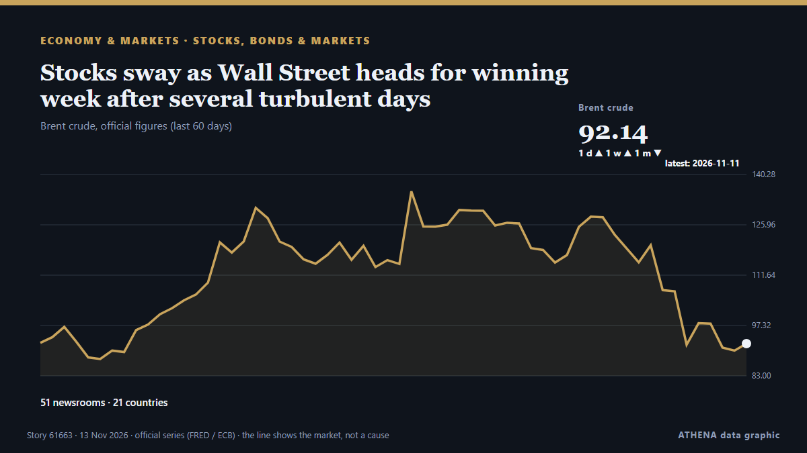

Stocks, bonds & markets
SponsoredPresented by  Cybernetics and Artificial Intelligence Lab Welcome to the Cybernetics and Artificial Intelligence Laboratory, established at the Department of Business Administration of the National and Kapodistrian University of Athens. The lab is headed by Professor Dimitrios Thomakos. The lab aims to do research that can be published in top venues. Our research uses tools and methods of Artificial Intelligence, and lies in the following areas: - Forecasting - Decision making - Cyber security - Finance We are always looking forward to collaborating with exceptional students!
Cybernetics and Artificial Intelligence Lab Welcome to the Cybernetics and Artificial Intelligence Laboratory, established at the Department of Business Administration of the National and Kapodistrian University of Athens. The lab is headed by Professor Dimitrios Thomakos. The lab aims to do research that can be published in top venues. Our research uses tools and methods of Artificial Intelligence, and lies in the following areas: - Forecasting - Decision making - Cyber security - Finance We are always looking forward to collaborating with exceptional students!
| 31 Oct | 0 |
|---|---|
| 1 Nov | 0 |
| 2 Nov | 0 |
| 3 Nov | 0 |
| 4 Nov | 0 |
| 5 Nov | 0 |
| 6 Nov | 0 |
| 7 Nov | 1 |
| 8 Nov | 0 |
| 9 Nov | 4 |
| 10 Nov | 6 |
| 11 Nov | 7 |
| 12 Nov | 5 |
| 13 Nov | 0 |

Stocks sway as Wall Street heads for winning week after several turbulent days
U.S. stocks are climbing Monday after oil prices eased back. from The Korea Times
Anthropic founders’ stakes are worth US$18 billion apiece at IPO price
Seven insiders are set to sell around US$250m in shares and keep total voting control. from New Zealand Herald
Marsh dodges Sandpapergate questions in testy press conference exchange
Mitch Marsh brings out the straight bat when peppered with questions regarding the 2018 South Africa tour. from ABC News Australia
Blackstone plants new flag in Dubai as Gulf wealth draws Wall Street
World’s largest alternative asset manager opens new DIFC office as it steps up its pursuit of Gulf investors, with more than 40 regional distribution partnerships already in place. from Arabian Business
S&P 500, Nasdaq rise as CoreWeave results ease AI spending worries
The CBOE Volatility Index, Wall Street's fear gauge, fell for the fourth straight session after CoreWeave said it would become profitable in the first half of 2028. from Free Malaysia Today
KOGAS Q3 net more than triples on equity gains, lower costs
South Korean LNG importer Kogas said its gas sales decreased by 13.5 percent in October compared to last year. from LNG Prime
Anthropic targets valuation of up to $1.4 trillion for blockbuster IPO
A visitor at Anthropic’s Code W/ Claude event in San Francisco, May 7, 2026. from The San Juan Daily Star
Denis Villeneuve Shares Update On James Bond Casting: “I Am Pushing The Gas”
Many names have been tested for the new James Bond, and Denis Villeneuve has shared an update on the casting process. from Deadline
Stock tips with a beat: Samsung Securities’ AI K-pop group racks up views
SEOUL, Nov 12 (Reuters) - Stock brokerage Samsung Securities has found brand ambassadors who never skip rehearsal and are unlikely to make tabloid headlines: a four-member, AI-generated K-pop girl… from Daily Maverick
MSCI removes more Indonesian stocks, dealing fresh blow to market amid reform push
The index provider has dropped energy firm Barito Pacific, owned by billionaire Prajogo Pangestu. from The Business Times
Anthropic set for £970bn valuation in mega IPO
The Claude maker’s potential stock market listing is set to see it join the ranks of the world’s biggest IPOs. from Evening Standard (London)
James Bond Shocker: Robert Pattinson and Nicholas Hoult Late Contenders for 007 After Auditioning for Denis Villeneuve
As James Bond casting rumors heat up, a couple more A-list actors have entered the mix: Robert Pattinson and Nicholas Hoult were among the stars who screen-tested to play the new 007. from Variety
FTC to fine 15 firms 1.62tr won for rigging govt. bond bids
South Korea's fair trade watchdog said Wednesday it has decided to impose 1.62 trillion won ($1.2 billion) in fines on 15 financial companies for colluding in government bond auctions for more than… from Korea Herald
Asian stocks climb as sliding oil prices buoy sentiment
The slump in oil price eased inflation concerns and lifted stocks after last week’s rout, as Democrats’ midterm victory fuelled fears of AI regulations. from Free Malaysia Today
Dangote Cement shelves London listing, blames market conditions in blow to LSE
Dangote Cement may revisit London listing when market stability improves, person familiar with the matter says Shares remain listed on Nigerian exchange, with no disruption to business plans… from Club of Mozambique
US evacuates 13 military aircraft from second UK base as new Iran threat raises alarm
The US military evacuated aircraft from a second airbase in Britain on Monday after a threat from Iran, the Wall Street Journal reported, citing people familiar with the matter,... from Oman Observer
Claude chatbot maker set for $1.3tn stock market debut despite ‘catastrophic’ AI warning
The AI company behind the Claude chatbot will offer its shares at between $70 and $78, which is lower than what was expected. from BBC News
US stocks: Wall Street jumps as oil slide cools inflation worries; Nvidia slumps
The three major indices closed higher for the day. from The Business Times